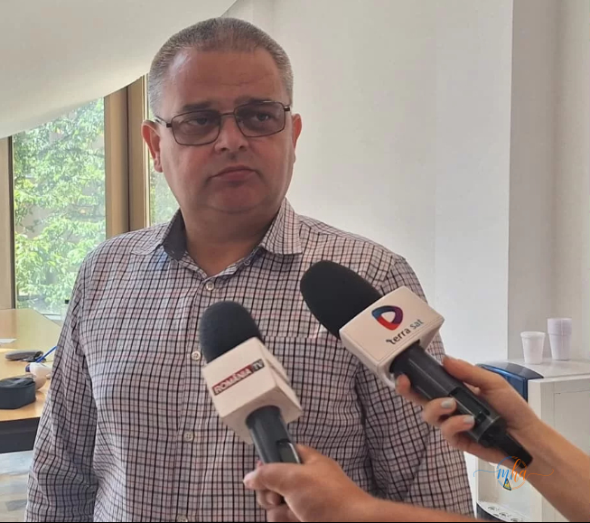

Municipiul Drobeta-Turnu Severin se află sub incidența unui cod roșu de caniculă, emis de Administrația Națională de Meteorologie, valabil în intervalul 29 iunie, ora 10:00 – 1 iulie, ora 10:00. În contextul temperaturilor extreme prognozate, autoritățile locale au dispus o serie de măsuri pentru reducerea disconfortului termic și protejarea populației.
Stropirea principalelor artere — de două ori pe zi
Primăria Drobeta-Turnu Severin a solicitat societății de salubrizare să intervină zilnic cu stropirea principalelor artere de circulație din municipiu, pentru a diminua, pe cât posibil, efectele temperaturilor ridicate.

Aurel Vlăduț, directorul tehnic al Primăriei Municipiului Drobeta-Turnu Severin.
„Acțiunile se vor desfășura de două ori pe zi, în intervalele 10:00 – 12:00 și 17:00 – 19:00, vizate fiind străzile principale și cele cu trafic intens."
— Aurel Vlăduț, directorul tehnic al Primăriei Municipiului Drobeta-Turnu Severin
11 puncte de prim ajutor — unde le găsiți în Drobeta-Turnu Severin
Pe toată durata codului roșu funcționează 11 puncte de prim ajutor, destinate persoanelor afectate de temperaturile extreme. Acestea sunt dotate cu aer condiționat, apă potabilă, personal medical și aparatură de specialitate, inclusiv aparate pentru măsurarea tensiunii arteriale și truse de prim ajutor.
📍 Cele 11 puncte de prim ajutor — locații
- Sediul Primăriei Drobeta-Turnu Severin
- Direcția de Taxe și Impozite Locale – Bulevardul Carol I
- Direcția de Asistență Socială
- Piața Mircea – Tronsonul 1
- Piața Mircea – Tronsonul 2
- Autogara Drobeta
- Târgul Veterani
- Piața Crihala
- Piața Crișan
- Ștrandul Municipal Schela Cladovei – Poarta 1
- Ștrandul Municipal Schela Cladovei – Poarta 2
„În această perioadă îi sfătuim pe oameni să evite deplasările în intervalele cu temperaturi foarte ridicate, să consume cât mai multe lichide și să nu se expună inutil la soare. La punctele de prim ajutor măsurăm tensiunea arterială, oferim apă persoanelor care au nevoie, monitorizăm starea celor care acuză simptome provocate de căldură și acordăm primul ajutor. Dacă situația o impune, solicităm intervenția unui echipaj de ambulanță. Îi încurajăm în special pe vârstnici, pe copiii mici și pe persoanele cu afecțiuni cronice să apeleze la noi ori de câte ori au nevoie."
— Elisabeta Armeanu, asistentă medicală
Recomandările autorităților pentru populația din Drobeta-Turnu Severin
⚠️ Ce trebuie să faceți pe perioada codului roșu
- ⛔ Evitați deplasările în orele de vârf — între 11:00 și 18:00
- 💧 Consumați cel puțin doi litri de lichide pe zi
- 👕 Purtați haine lejere, deschise la culoare
- 🏥 Solicitați ajutor medical la primele semne de epuizare provocată de căldură
- 👴 Atenție sporită la vârstnici, copii mici și persoane cu boli cronice
- 📍 Apelați la cele 11 puncte de prim ajutor din municipiu